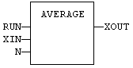

Function Block
Calculates the average of signal samples.
|
Name |
Type |
Description |
|
RUN |
BOOL |
Enabling command. |
|
XIN |
REAL |
Input signal (*). |
|
N |
DINT |
Number of samples stored for average calculation - Cannot exceed 128. |
|
Name |
Type |
Description |
|
XOUT |
REAL |
Average of the stored samples (*). |
(*) AVERAGEL has LREAL arguments.
The average is calculated according to the number of stored samples, that can be less that N when the block is enabled. In LD language, the input rung is the RUN command. The output rung keeps the state of the input rung.
The "N" input is taken into account only when the RUN input is FALSE, so the "RUN" needs to be reset after a change.
MyAve is a declared instance of AVERAGE function block.
MyAve (RUN, XIN, N);
XOUT := MyAve.XOUT;

ENO has the same state as RUN.
MyAve is a declared instance of AVERAGE function block.
Op1: CAL MyAve (RUN, XIN, N)
LD MyAve.XOUT
ST XOUT